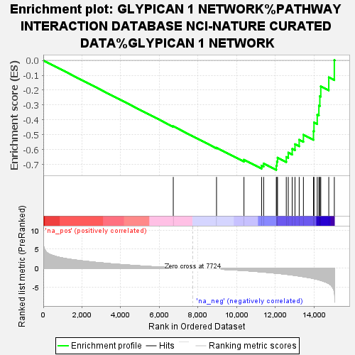
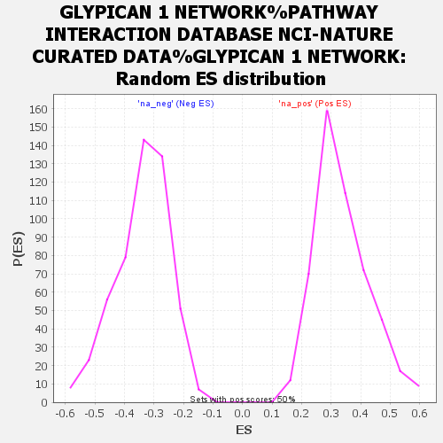

| Dataset | my_ranked_genes |
| Phenotype | NoPhenotypeAvailable |
| Upregulated in class | na_neg |
| GeneSet | GLYPICAN 1 NETWORK%PATHWAY INTERACTION DATABASE NCI-NATURE CURATED DATA%GLYPICAN 1 NETWORK |
| Enrichment Score (ES) | -0.7356226 |
| Normalized Enrichment Score (NES) | -2.1641583 |
| Nominal p-value | 0.0 |
| FDR q-value | 0.0010823868 |
| FWER p-Value | 0.019 |

| SYMBOL | RANK IN GENE LIST | RANK METRIC SCORE | RUNNING ES | CORE ENRICHMENT | |
|---|---|---|---|---|---|
| 1 | YES1 | 6724 | 0.174 | -0.4428 | No |
| 2 | LYN | 8962 | -0.226 | -0.5864 | No |
| 3 | LCK | 10382 | -0.618 | -0.6673 | No |
| 4 | SERPINC1 | 11294 | -0.957 | -0.7070 | No |
| 5 | TGFBR1 | 11401 | -1.004 | -0.6923 | No |
| 6 | PRNP | 12054 | -1.317 | -0.7071 | Yes |
| 7 | TGFB1 | 12086 | -1.329 | -0.6803 | Yes |
| 8 | FLT1 | 12119 | -1.346 | -0.6533 | Yes |
| 9 | SRC | 12571 | -1.595 | -0.6487 | Yes |
| 10 | VEGFA | 12674 | -1.653 | -0.6196 | Yes |
| 11 | FGFR1 | 12878 | -1.789 | -0.5943 | Yes |
| 12 | TGFBR2 | 13022 | -1.888 | -0.5629 | Yes |
| 13 | TGFB3 | 13239 | -2.039 | -0.5330 | Yes |
| 14 | FGF2 | 13458 | -2.222 | -0.4994 | Yes |
| 15 | SMAD2 | 13979 | -2.705 | -0.4753 | Yes |
| 16 | FYN | 14006 | -2.750 | -0.4174 | Yes |
| 17 | APP | 14173 | -2.928 | -0.3650 | Yes |
| 18 | SLIT2 | 14258 | -3.048 | -0.3045 | Yes |
| 19 | GPC1 | 14308 | -3.118 | -0.2402 | Yes |
| 20 | LAMA1 | 14357 | -3.199 | -0.1740 | Yes |
| 21 | NRG1 | 14770 | -4.036 | -0.1139 | Yes |
| 22 | PLA2G2A | 15057 | -6.199 | 0.0015 | Yes |
